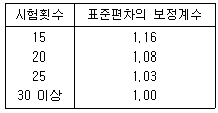
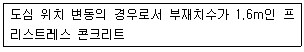
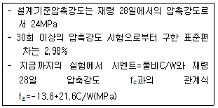
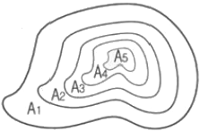
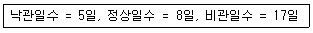
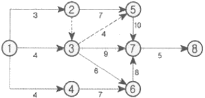
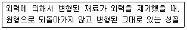
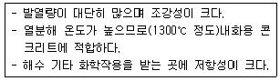
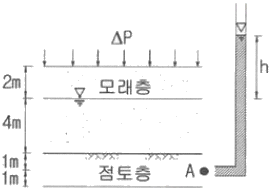
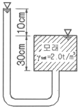

건설재료시험기사 (2016-10-01 기출문제)
1과목: 콘크리트공학
1. 콘크리트의 배합강도를 결정하기 위하여 23회의 압축강도시험을 실시하여 4MPa의 표준편차를 구하였다. 아래 표의 보정계수를 참고하여 배합강도 결정에 적용할 표준편차를 구하면?

- 4.0MPa
- 4.12MPa
- 4.2MPa
- 4.32MPa
(정답률: 76%)

2. AE콘크리트에 대한 설명 중 옳지 않은 것은?
- 수밀성 및 화학적 저항성이 증대된다.
- 동일한 슬럼프에 대한 사용수량을 감소시킨다.
- 콘크리트의 유동성을 증가시키고 재료분리에 대한 저항성을 증대시킨다.
- 물-시멘트가 일정할 경우 공기량이 증가할수록 강도 및 내구성이 증가한다.
(정답률: 75%)
3. 콘크리트의 압축강도를 시험하여 슬래브 및 보 및면의 거푸집과 동바리를 떼어낼 때 콘크리트 압축강도 기준값으로 옳은 것은?
- 설계기준압축강도×1/3 이상, 14MPa 이상
- 설계기준압축강도×2/3 이상, 14MPa 이상
- 설계기준압축강도×1/3 이상, 10MPa 이상
- 설계기준압축강도×2/3 이상, 10MPa 이상
(정답률: 84%)
4. 아래 표와 같은 조건의 프리스트레스트 콘크리트에서 거푸집 내에서 허용되는 긴장재의 배치오차 한계로서 옳은 것은?

- 5mm
- 8mm
- 10mm
- 13mm
(정답률: 67%)
5. 숏크리트(Shortcrete)시공에 대한 주의사항으로 잘못된 것은?
- 대기 온도가 10℃ 이상일 때 뿜어붙이기를 실시하며, 그 이하의 온도일 때는 적절한 온도대책을 세운 후 실시한다.
- 숏크리트는 빠르게 운반하고, 급결제를 첨가한 후는 발 뿜어붙이기 작업을 실시하여야 한다.
- 숏크리트 작업에서 반발량이 최소가 되도록 하고, 리바운드된 재료는 즉시 혼합하여 사용하여야 한다.
- 숏크리트는 뿜어붙인 콘크리트가 흘러내리지 않는 범위의 적당한 두께를 뿜어붙이고, 소정의 두께가 될 때까지 반복해서 뿜어붙여야 한다.
(정답률: 85%)
6. 콘크리트 받아들이기 품질관리에 대한 설명으로 틀린 것은? (단, 콘크리트표준시방서 규정을 따른다.)
- 콘크리트 슬럼프시험은 압축강도 시험용 공시체 채취시 및 타설 중에 품질변화가 인정될 때 실시한다.
- 염소이온량 시험은 바다 잔골재를 사용할 경우는 1일에 2회 실시하고, 그 밖의 경우는 1주에 1회 실시한다.
- 콘크리트 받아들이기 품질검사는 콘크리트가 타설괴고 난 후에 실시하는 것을 원칙으로 한다.
- 굳지 않은 콘크리트의 상태에 대한 검사는 외관 관찰로서 콘크리트 타설 개시 및 타설 중 수시로 실시한다.
(정답률: 90%)
7. 콘크리트의 균열에 대한 설명으로 틀린 것은?
- 굳지 않은 콘크리트에 발생하는 침하균열은 철근의 직경이 작을수록, 슬럼프가 작을수록, 피복두께가 클수록 증가한다.
- 단위수량이 클수록 건조수축에 의한 균열량이 많아진다.
- 콘크리트 타설 후 경화되기 이전에 건조한 바람이나 고온저습한 외기에 의하여 발생하는 균열을 수성수축균열이라고 한다.
- 알칼리 골재반응에 의하여 콘크리트는 팽창되며 균열이 유발될 수 있다.
(정답률: 68%)
8. 다음 중 프리스트레스트 콘크리트의 프리스트레스 감소의 원인이 아닌 것은?
- 강재의 릴렉세이션
- 콘크리트의 건조수축
- 콘크리트의 크리프
- 쉬이스관의 크기
(정답률: 90%)
9. 콘크리트 공시체의 압축강도에 관한 설명으로 옳은 것은?
- 원주형 공시체의 직경과 입방체 공시체의 한변의 길이가 같으면 원주형 공시체의 강도가 작다.
- 하중재하속도가 빠를수록 강도가 작게 나타난다.
- 공시체에 요철이 있는 경우는 압축강도가 크게 나타난다.
- 시험 직전에 공시체를 건조시키면 강도가 크게 감소한다.
(정답률: 50%)
10. 굳지 않은 콘크리트에 관한 설명으로 틀린 것은?
- 잔골재의 세립분 함유량 및 잔골재율이 작으면 콘크리트의 재료분리 경향이 커진다.
- 단위시멘트량을 크게 하면 성형성이 나빠진다.
- 혼합시 콘크리트의 온도가 높으면 슬럼프값은 저하된다.
- 포졸란 재료를 사용하면 세립이 부족한 잔골재를 사용한 콘크리트의 워커빌리티를 개선시킨다.
(정답률: 70%)
11. 시방배합을 통해 단위수량 170kg/m3, 시멘트량 370kg/m3, 잔골재 700kg/m3, 굵은골재 1⑤0kg/m3을 산출하였다. 현장골재의 입도를 고려하여 현장배합으로 수정한다면 잔골재의 양은? (단, 현장골재의 입도는 잔골재 중 5mm체에 남는 양이 10%이고, 굵은골재 중 5mm체를 통과한 양이 5%이다.)
- 721kg/m3
- 735kg/m3
- 752kg/m3
- 762kg/m3
(정답률: 64%)
12. 유동화 콘크리트에 대한 설명으로 틀린 것은?
- 미리 비빈 베이스 콘크리트에 유동화제를 첨가하여 유동성을 증대시킨 콘크리트를 유동화 콘크리트하고 한다.
- 유동화제는 희석하여 사용하고, 미리 정한 소정의 양을 2~3회 나누어 첨가하며, 계량은 질량 또는 용적으로 계량하고, 그 계량오차는 1회에 1% 이내로 한다.
- 유동화 콘크리트의 슬럼프 증가량은 100mm이하를 원칙으로 하며, 50~80mm를 표준으로 한다.
- 베이스 콘크리트 및 유동화 콘크리트의 슬럼프 및 공기량 시험은 50m3마다 1회씩 실시하는 것을 표준으로 한다.
(정답률: 69%)
13. 쪼갬인장강도 시험으로부터 최대하중 P=150kN을 얻었다. 원주 공시체의 직경이 150mm, 길이가 300mm이라고 하면 이 공시체의 쪼갬인장강도는?
- 1.06MPa
- 1.22MPa
- 2.12MPa
- 2.43MPa
(정답률: 80%)
14. 수중콘크리트에 대한 설명으로 틀린 것은?
- 수중콘크리트를 시공할 때 시멘트가 물에 씻겨서 흘러나오지 않도록 트레미나 콘크리트 펌프를 사용해서 타설하여야 한다.
- 수중콘크리트를 타설할 때 완전히 물막이를 할 수 없을 경우에도 유속은 50mm/s이하로 하여야 한다.
- 일반 수중콘크리트는 수중에서 시공할 때의 강도가 표준공시체 강도의 1.2~1.5배가 되도록 배합강도를 설정하여야 한다.
- 수중콘크리트의 비비는 시간은 시험에 의해 콘크리트 소요의 품질을 확인하여 정하여야 하며, 강제식 믹서의 경우 비비기 시간은 90~180초를 표준으로 한다.
(정답률: 59%)
15. 보통포틀랜드시멘트를 사용한 경우 콘크리트의 습양생생 기간의 표준은? (단, 일평균 기온이 10℃이상이고 15℃ 미만인 경우)
- 1일 이상
- 3일 이상
- 5일 이상
- 7일 이상
(정답률: 59%)
16. 고압증기양생한 콘크리트에 대한 설명으로 틀린 것은?
- 고압증기양생한 콘크리트는 어느 정도 취성을 갖는다.
- 고압증기양생한 콘크리트는 보통양생한 것에 비해 철근의 부착강도가 약 1/2이 되므로 철근콘크리트 부재에 적용하는 것은 바람직하지 못하다.
- 고압증기양생한 콘크리트는 보통양생한 것에 비해 백태현상이 감소된다.
- 고압증기양생한 콘크리트는 보통양생한 것에 비해 열평창계수와 탄성계수가 매우 작다.
(정답률: 82%)
17. 배합설계에서 아래 표와 조건일 경우 콘크리트의 물-시멘트비를 결정하면 약 얼마인가?

- 45.6%
- 48.3%
- 51.7%
- 57.2%
(정답률: 55%)
18. 온도균열을 완화하기 위한 시고상의 대책으로 맞지 않는 것은?
- 단위시멘트량을 크게 한다.
- 수화열이 낮은 시멘트를 선택한다.
- 1회에 타설하는 높이를 줄인다.
- 사전에 재료의 온도를 가능한 한 적절하게 낮추어 사용한다.
(정답률: 80%)
19. 페놀프탈레인 용액을 사용한 콘크리트의 탄산화 판정시험에서 탄산화된 부분에서 나타나는 색은?
- 붉은색
- 노란색
- 청색
- 착색되지 않음
(정답률: 80%)
20. 콘크리트 비비기에 대한 설명으로 잘못된 것은?
- 비비기 시간에 대한 시험을 실시하지 않은 경우 그 최소시간은 강제식 믹서일 때에는 1분 이상을 표준으로 한다.
- 비비기는 미리 정해둔 비비기 시잔 이상 계속해서는 안 된다.
- 이것 안의 콘크리트를 전부 꺼낸 후가 아니면 믹서 안에 다음 재료를 넣어서는 안된다.
- 연속믹서를 사용할 경우, 비비기 시작 후 최초에 배출되는 콘크리트는 사용해서는 안된다.
(정답률: 78%)
2과목: 건설시공 및 관리
21. 아래 그림과 같은 지형에서 등고선법에 의한 전체 토량을 구하면? (단, 각 등고선간의 높이차는 20m 이고, A1의 면적은 1400m2, A2의 면적은 950m2, A3의 면적은 600m2, A4의 면적은 250m2, A5의 면적은 100m2이다.)

- 38200m3
- 44400m3
- 50000m3
- 56000m3
(정답률: 60%)
22. 교각의 기초와 같은 깊은 수중의 기초 터파기에는 다음 어느 굴착기계가 가장 적당한가?
- 파워 쇼벨(Power shovel)
- 백호우(Back hoe)
- 드래그 라인(Drag line)
- 클램 쉘(Claim shell)
(정답률: 67%)
23. 아래 표와 같은 조건에서 3점 견적법에 따른 기대공사일수를 구하면?

- 6일
- 8일
- 9일
- 10일
(정답률: 78%)
24. 발파에 대한 용어 중 장약중심으로부터 자유면까지의 최단거리를 무엇이라 하는가?
- 최소 누두반경
- 최소 저항선
- 누두공
- 누두지수
(정답률: 83%)
25. 습윤상태가 곳에 따라 여러 가지로 변화하고 있는 배수지구에서는 습윤상태에 알맞은 암거배수의 양식을 취한다. 이와 같이 1지구내에 소규모의 여러 가지 암거배수를 많이 설치한 암거의 배열 방ㅅ식은?
- 차단식
- 집단식
- 자연식
- 빗식
(정답률: 60%)
26. 다져진 토량 45000m3를 성토하는데 흐트러진 토량 30000m3가 있다. 이 때, 부족토량은 자연상태 토량(m3)으로 얼마인가? (단, 토량변화율 L=1.25, C=0.9)
- 18600m3
- 19400m3
- 23800m3
- 26000m3
(정답률: 67%)
27. 딥퍼의 용량 0.6m3, 흙의 체적변화율(L) 1.2, 기계의 능률계수 0.9, 딥퍼계수 0.85, 싸이클타임 25sec인 파워 쇼벨의 1시간당 굴착 작업량은?
- 52.45m3/h
- 55.08m3/h
- 64.84m3/h
- 79.32m3/h
(정답률: 68%)
28. 특수제작된 거푸집을 이동시키면서 진행방향으로 슬래브를 타설하는 공법이며, 유압잭을 이용하여 전ㆍ후진의 구동이 가능하며 main girder 및 fom work를 상하좌우로 조절 가능한 기계화된 교량가설공법은?
- MSS 공법
- ILM 공법
- FCM 공법
- dywidag 공법
(정답률: 63%)
29. 흙댐을 구조상 분류할 때 중앙에 불투성의 흙을, 양측에는 투수성 흙을 배치한 것으로 두가지 이상의 재료를 얻을 수 있는 곳에서 경제적인 댐 형식은?
- 심벽형 댐
- 균일형 댐
- 월류 댐
- Zone형 댐
(정답률: 81%)
30. 다음은 아스팔트 포장의 단면도이다. 상단부터(A~E) 차례대로 옳게 기술한 것은?
- 차단층, 중간층, 표층, 기층, 보조기층
- 표층, 기층, 중간층, 보조기층, 차단층
- 표층, 중간층, 차단층, 기층, 보조기층
- 표층, 중간층, 기층, 보조기층, 차단층
(정답률: 75%)
31. 뉴메틱 케이슨(Pneumatic caisson)공법의 장점에 대한 설명으로 틀린 것은?
- 압축공기를 이용하여 시공하므로 소규모 공사나 심도가 얕은 기초공사에 경제적이다.
- 오픈 케이스보다 침하공정이 빠르고 장애물제거가 쉽다.
- 시공 시에 토질 확인이 가능하며, 평판재하시험을 통한 지지력 측정이 가능하다.
- 지하수를 저하시키지 않으며, 히빙, 보일링을 방지할 수 있으므로 인접 구조물의 침하 우려가 없다.
(정답률: 55%)
32. 두꺼운 연약지반의 처리공법 주 점성토이며, 압밀속도를 빨리 하고자 할 때 가장 적당한 공법은?
- 제거치환 공법
- vertical drain 공법
- vibro floatation 공법
- 압성토 공법
(정답률: 62%)
33. 유효다짐폭 3m의 10t 머캐덤 로울러(macadam roller) 1대를 사용하여 성토의 다짐을 시핼할 때 평균 깔기두께 20cm, 평균작업속도 2km/hr, 다짐횟수를 10회, 작업효율 0.6으로 g면 1시간당 작업량은 약 얼마인가? (단, 토량변화율(L)은 1.25이다.)
- 48.4m3/h
- 52.7m3/h
- 57.6m3/h
- 64.3m3/h
(정답률: 51%)
34. 아래 그림과 같은 네트워크 공정표에서 표준공기를 구하면?

- 23일
- 24일
- 25일
- 26일
(정답률: 66%)
35. 폭우시 옹벽 배면에 배수시설이 취약하면 옹벽저면을 통하여 침투수의 수위가 올라간다. 이 침투수가 옹벽에 미치는 영향을 설명한 것 중 옳지 않은 것은?
- 수평저항력의 증가
- 활동면에서의 간극수압 증가
- 옹벽 바닥면에서의 양압력 증가
- 부분포화에 따른 뒷채움 흙무게의 증가
(정답률: 86%)
36. 아스팔트포장의 파손현상 중 차량하중에 의해 발생한 변형량의 일부가 회복되지 못하여 발생하는 영구변형으로 차량통과위치에 균일하게 발생하는 침하를 보이는 아스팔트포장의 대표적인 파손현상을 무엇이라 하는가?
- 피로균열
- 저온균열
- 라벨링(Ravelling)
- 루팅(Rutting)
(정답률: 65%)
37. 정수의 값이 3, 동결지수가 400ㆍday일 때, 데라다 공식을 이용하여 동결깊이를 구하면?
- 30cm
- 40cm
- 50cm
- 60cm
(정답률: 63%)
38. T.B.M 공법에 대한 설명으로 옳은 것은?
- 무진동 화약을 사용하는 방법이다.
- cutter에 의하여 암석을 암쇄 또는 굴착하여 나가는 굴착공법이다.
- 암층의 변화에 대하여 적응하기가 쉽다.
- 여굴이 많아질 우려가 있다.
(정답률: 55%)
39. Perloading공법에 대한 설명 중에서 적당하지 못한 것은?
- 공기가 급한 경우에 적용한다.
- 구조물의 잔류 침하를 미리 막는 공법의 일종이다.
- 압밀에 의한 점성토지반의 강도를 증가시키는 효과가 있다.
- 도로, 방파제 등 구조물 자체가 재하중으로 작용하는 형식이다.
(정답률: 67%)
40. 지반안정용액을 주수하면서 수직굴착하고 철근콘크리트를 타설한 후 굴착하는 공법으로 타공법에 비해 차수성이 우수하고 지반변위가 작은 토류공법은?
- 강널말뚝 흙막이벽
- 벽강관 널말뚝 흙막이벽
- 벽식연속 지중벽 공법
- Top down 공법
(정답률: 62%)
3과목: 건설재료 및 시험
41. 재료의 일반적 성질 중 다음에 해당하는 성질은 무엇인가?

- 인성
- 취성
- 탄성
- 소성
(정답률: 72%)
42. KS F 2530에 규정되어 있는 경석의 압축강도 기준은?
- 60MPa 이상
- 50MPa 이상
- 40MPa 이상
- 30MPa 이상
(정답률: 66%)
43. 토목섬유 중 직포형과 부직포형이 있으며 분리, 배수, 보강, 여과기능을 갖고 오탁방지망, drain board, pack drain 포대, geo web 등에 사용되는 자재는?
- 지오텍스타일
- 지오그리드
- 지오네트
- 지오맴브레인
(정답률: 64%)
44. 콘크리트 잔골재의 유해물 함유량 기준에 대한 설명으로 부적합한 것은? (단, 질량백분율)
- 콘크리트 표면이 마모작용을 받을 경우 0.08mm체 통과량 : 5.0% 이내
- 점토 덩어지 : 1% 이내
- 염화물(Nacl 환산량) : 0.04% 이내
- 콘크리트 외관이 중요한 경우로 석탄, 갈탄 등으로 0.002g/mm3의 액체에 뜨는 것 0.5% 이내
(정답률: 41%)
45. 석재로서의 화강암에 대한 설명으로 틀린 것은?
- 조직이 균일하고 내성 및 강도가 크다.
- 내호성이 강해 고열을 받는 내화구조용으로 적합하다.
- 균열이 적기 때문에 큰 재료를 채취할 수 있다.
- 외관이 비교적 아름답기 때문에 장식재료로 사용할 수 있다.
(정답률: 83%)
46. 어떤 재료의 포아송 비가 1/3이고, 탄성계수는 2×105MPa일 때 전단 탄성계수는?
- 25600MPa
- 75000MPa
- 54400MPa
- 22950MPa
(정답률: 64%)
47. 다음 특성을 가지는 시멘트는?

- 플라이애시 시멘트
- 고로 시멘트
- 백색 포틀랜드 시멘트
- 알루미나 시멘트
(정답률: 71%)
48. 아스팔트 혼합재에서 채움재(filler)를 혼합하는 목적은 다음 중 어느 것인가?
- 아스팔트의 비중을 높이기 위해서
- 아스팔트의 침입도를 높이기 위애서
- 아스팔트의 공극을 메우기 위해서
- 아스팔트의 내열성을 증가시키기 위해서
(정답률: 77%)
49. 아스팔트 중의 염화물 함유량은 콘크리트 중에 함유된 염화물 이온의 총량으로 표시하는데 비빌 때 아스팔트 중의 전염화물 이온량은 원칙적으로 얼마 이하로 하여야 하는가?
- 0.5kg/m3
- 0.3kg/m3
- 0.2kg/m3
- 0.1kg/m3
(정답률: 74%)
50. 콘크리트용 부순골재에 대한 설명 중 틀린 것은?
- 부순골재는 입자의 형상판정을 위하여 입형판정실적률을 사용한다.
- 부순골재를 사용한 콘크리트는 동일한 워커빌리티를 얻기 위해서 단위수량이 증가된다.
- 양질의 부순골재를 사용한 콘크리트의 압축강도는 일반 정자갈을 사용한 콘크리트의 압축강도보다 감소된다.
- 부순골재의 실적률이 작을수록 콘크리트의 슬럼프 저하가 크다.
(정답률: 73%)
51. 콘크리트용 혼화제(混和劑)에 대한 일반적인 설명으로 틀린 것은?
- AE제에 의한 연행공기는 시멘트, 공재입자 주위에서 베어링(bearing)과 같은 작용을 함으로써 콘크리트의 워커빌리티를 개선하는 효과가 있다.
- 고성능 감수제는 그 사용방법에 따라 고강도 콘크리트용 감수제와 유동화제로 나누어지지만 기본적인 성능은 동일하다.
- 촉진제는 응결시간이 빠르고 조기강도를 증대시키는 효과가 있기 때문에 여름철 공사에 사용하면 유리하다.
- 지연제는 사일로, 대형구조물 및 수조 등과 같이 연속 타설을 필요로 하는 콘크리트 구조에 작업이음의 발생 등의 방지에 유효하다.
(정답률: 77%)
52. 목재의 특징에 대한 설명 중 틀린 것은?
- 함수율에 따라 수축팽창이 크다.
- 가연성이 있어 내화성이 작다.
- 온도에 의한 수축, 팽창이 크다.
- 부식이 쉽고 충해를 입는다.
(정답률: 62%)
53. 포틀랜드시멘트의 일반적인 성질에 대한 설명으로 옳은 것은?
- 시멘트는 풍화되거나 소성이 불충분할 경우 비중이 증가한다.
- 시멘트의 분말도가 낮으면 콘크리트의 조기강도는 높아진다.
- 시멘트의 안정성은 클링커의 소성이 불충분할 경우 생긴 유리석회 등의 양이 지나치게 많을 경우 불안정해 진다.
- 시멘트와 물이 반응하여 점차 유동성과 점성을 상실하는 상태를 경회라 한다.
(정답률: 51%)
54. 천연 아스팔트에 속하지 않는 것은?
- 록 아스팔트
- 레이크 아스팔트
- 샌드 아스팔트
- 스트레이트 아스팔트
(정답률: 77%)
55. 콘크리트용 화학 혼화제(KS F 2560)에서 규정하고 있는 AE제의 품질 성능에 대한 규정항목이 아닌 것은?
- 경시 변화량
- 감수율
- 블리딩양의 비
- 길이 변화비
(정답률: 40%)
56. 다음 중 시멘트의 성질과 그 성질을 측정하는 시험기의 연결이 잘못된 것은?
- 안정성-오토클레이브
- 비중-르샤틀리에병
- 응결-비카트침
- 유동성-길모아침
(정답률: 71%)
57. 혼화재료의 일반적인 사용목적이 아닌 것은?
- 강도 증가
- 발열량 증가
- 수밀성 증진
- 응결, 경화시간 조절
(정답률: 68%)
58. 폭파약 취급상의 주의할 사항으로 틀린 것은?
- 가. 운반 중 화기 및 충격에 대해서 세심한 주의를 한다.
- 뇌관과 폭약은 동일 장소에 두어서 사용에 편리하게 한다.
- 장기보존에 의한 흡습, 동결에 대하여 주의를 한다.
- 다이너마이트는 일광의 직사와 화기 있는 곳을 피한다.
(정답률: 83%)
59. 어떤 골재의 밀도가 2.60g/cm3이고 단위용적질량은 1.65t/m3이다. 이 때 이 골재의 공극률(%)은?
- 36.5%
- 43.2%
- 53.5%
- 63.5%
(정답률: 66%)
60. 일반적으로 도로포장에 사용되는 포장용 가열 아스팔트 혼합물의 생산온도로 가장 가까운 것은?
- 70℃
- 90℃
- 160℃
- 220℃
(정답률: 69%)
4과목: 토질 및 기초
61. 암질을 나타내는 항목과 직접 관계가 없는 것은?
- N치
- RQD값
- 탄성파속도
- 균열의 간격
(정답률: 61%)
62. Paper drain 설계 시 Drain paper의 폭이 10cm, 두께가 0.3cm 일 때, Draun paper의 등치환산원의 직경이 얼마이면 Sand Drain과 동등한 값으로 볼 수 있는가? (단, 형상계수 : 0.75)
- 5cm
- 8cm
- 10cm
- 15cm
(정답률: 43%)
63. 3층 구조로 구조결합 사이에 치환성 양이온이 있어서 화성이 크고 시트 사이에 물이 들어가 팽창 수축이 크고 공학적 안정성은 약한 점토 광물은?
- Kaolinite
- illite
- monntmorillorite
- sand
(정답률: 60%)
64. 강도정수가 c=0, Φ=40° 인 사질토지반에서 Rankine 이론에 의한 수동토압계수는 주동토압계수의 몇 배인가?
- 4.6
- 9.0
- 12.3
- 21.1
(정답률: 48%)
65. 어떤 퇴적층에서 수평방향의 투수계수는 4.0×10-4cm/sec이고, 수직방향의 투수계수는 3.0×10-4cm/sec이다. 이 흑을 등반성으로 생각할 때, 등가의 평균투수계수는 얼마인가?
- 3.46×10-4cm/sec
- 5.0×10-4cm/sec
- 6.0×10-4cm/sec
- 6.93×10-4cm/sec
(정답률: 55%)
66. 크기가 1m×2m인 기초에 10t/m2의 등부노하중이 작용할 때 기초 아래 4m인 점의 압력증가는 얼마인가? (단, 2:1 분포법을 이용한다.)
- 0.67t/m2
- 0.33t/m2
- 0.22t/m2
- 0.11t/m2
(정답률: 49%)
67. 어느 지반에 30cm×30cm 재하판을 이용하여 평판재하시험을 한 결과, 항복하중이 5t, 극한하중이 9t이었다. 이 지반의 허용지지력은?
- 55.6t/m2
- 27.8t/m2
- 100t/m2
- 33.3t/m2
(정답률: 41%)
68. 두께 5m의 점토층을 90% 압밀하는데 50일이 걸렸다. 같은 조건하에서 10m의 점토층을 90% 압밀하는데 걸리는 시간은?
- 100일
- 160일
- 200일
- 240일
(정답률: 52%)
69. 흙의 연경도(Consistency)에 관한 설명으로 틀린 것은?
- 소성지수는 점성이 클수록 크다.
- 퍼프니스지수는 Colloid가 많은 흙일수록 값이 작다.
- 액성한계시험에서 얻어지는 유동곡선의기울기를 유동지수라 한다.
- 액성지수와 컨시스턴시지수는 흙지반의 무르고 단단한 상태를 판정하는데 이용된다.
(정답률: 43%)
70. 그림과 같이 6m 두께의 모래층 밑에 2m두께의 점토층이 존재한다. 지하수면은 지표아래 2m지점에 존재한다. 이 때, 지표면에 △P=5.0t/m2의 등분포하중이 작용하여 상당한 시간이 경과한 후, 점토층의 중간높이 A점에 피에조미터를 세워 수두를 측정한 결과, h=4.0m로 나타났다면 A점의 압밀도는?

- 20%
- 30%
- 50%
- 80%
(정답률: 36%)
71. 그림과 같은 조건에서 분사현상에 대한 안전율을 구하면? (단, 모래의 γsat=2.0t/m3이다.)

- 1.0
- 2.0
- 2.5
- 3.0
(정답률: 47%)
72. 4m×4m 크기인 정사각형 기초를 내부마찰각 Φ=20°, 점착력 c=3t/m2인 지반에 설치하였다. 흙의 단위중량(γ)1.9t/m3이고 안전율을 3으로 할 때 기초의 허용하중을 tezaghi 지질공식으로 구하면? (단, 기초의 깊이는 1m이고, 전반전단파괴가 발생한다고 가정하며, Nc=17.69, Nq=7.44, Nγ=4.97이다.)
- 478t
- 524t
- 567t
- 621t
(정답률: 53%)
73. 연약 점토층을 관통하여 철근콘크리트 파일을 박았을 때 부마찰력(Negative fiction)은? (단, 지반의 일축압축강도 qu=2t/m2, 파일직경 D=50cm, 관입길이 ℓ=10m이다.)
- 15.71t
- 18.53t
- 20.82t
- 24.24t
(정답률: 47%)
74. 다짐에 의한 다음 설명 중 옳지 않은 것은?
- 세립토의 비율이 클수록 최적함수비는 증가한다.
- 세립토의 비율이 클수록 최대건조 단위중량은 증가한다.
- 다짐에너지가 클수록 죄적함수비는 감소한다.
- 최대건조 단위중량은 사질토에서 크고 점성토에서 작다.
(정답률: 55%)
75. 다음 현장시험 중 Sounding의 종류가 아닌 것은?
- Vane 시험
- 표준관입 시험
- 동적 원추관입 시험
- 평판재하 시험
(정답률: 62%)
76. 다음 중 일시적인 지반 개량 공법에 속하는 것은?
- 다짐 모래말뚝 공법
- 약액주입 공법
- 프리로딩 공법
- 동결 공법
(정답률: 46%)
77. 직접전단 시험을 한 결과 수직응력이 12kg/cm2일 때 전단저항이 5kg/cm2, 또 수직응력이 24kg/cm2일 때 전단저항이 7kg/cm2이었다. 수직응력이 30kg/cm2일 때의 전단저항은 약 얼마인가?
- 6kg/cm2
- 8kg/cm2
- 10kg/cm2
- 12kg/cm2
(정답률: 45%)
78. 흙의 내부마찰각(Φ)은 20°, 점착력(c)이 2.4t/m2이고, 단위중량(γt)은 1.93t/m3인 사면의 경사각이 45°일 때 임계높이는 약 얼마인가? (단, 안정수 m=0.06)
- 15m
- 18m
- 21m
- 24m
(정답률: 36%)
79. 암반층 위에 5m 두께의 토층이 경사 15°의 자연사면으로 되어 있다. 이 토층은 c=1.5 t/m2, Φ=30°, γsat=1.8t/m3이고, 지하수면은 토층의 지표면과 일치하고 침투는 경사면과 대략 평행이다. 이 때의 안전율은?
- 0.8
- 1.1
- 1.6
- 2.0
(정답률: 37%)
80. 다음은 정규압밀점토의 삼축압축 시험결과를 나타낸 것이다. 파괴시의 전당응력 τ와 수직응력 σ를 구하면?
- τ=1.73t/m2, σ=2.50t/m2
- τ=1.41t/m2, σ=3.00t/m2
- τ=1.41t/m2, σ=2.50t/m2
- τ=1.73t/m2, σ=3.00t/m2
(정답률: 43%)
보정계수 = 0.95
표준편차 = 4MPa
보정된 표준편차 = 0.95 × 4MPa = 3.8MPa
따라서, 보정된 표준편차를 이용하여 배합강도 결정에 적용할 표준편차는 다음과 같다.
표준편차 = 3.8MPa × 1.1 = 4.18MPa
이 값은 가장 가까운 보기인 "4.2MPa"와 일치하므로 정답은 "4.2MPa"이다.